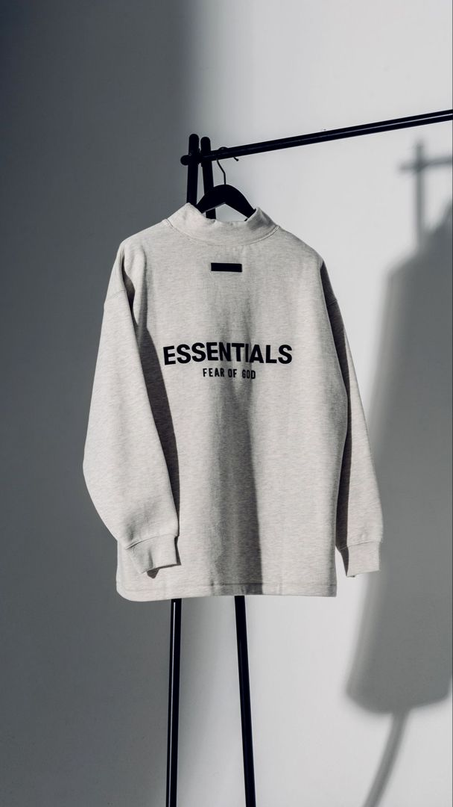
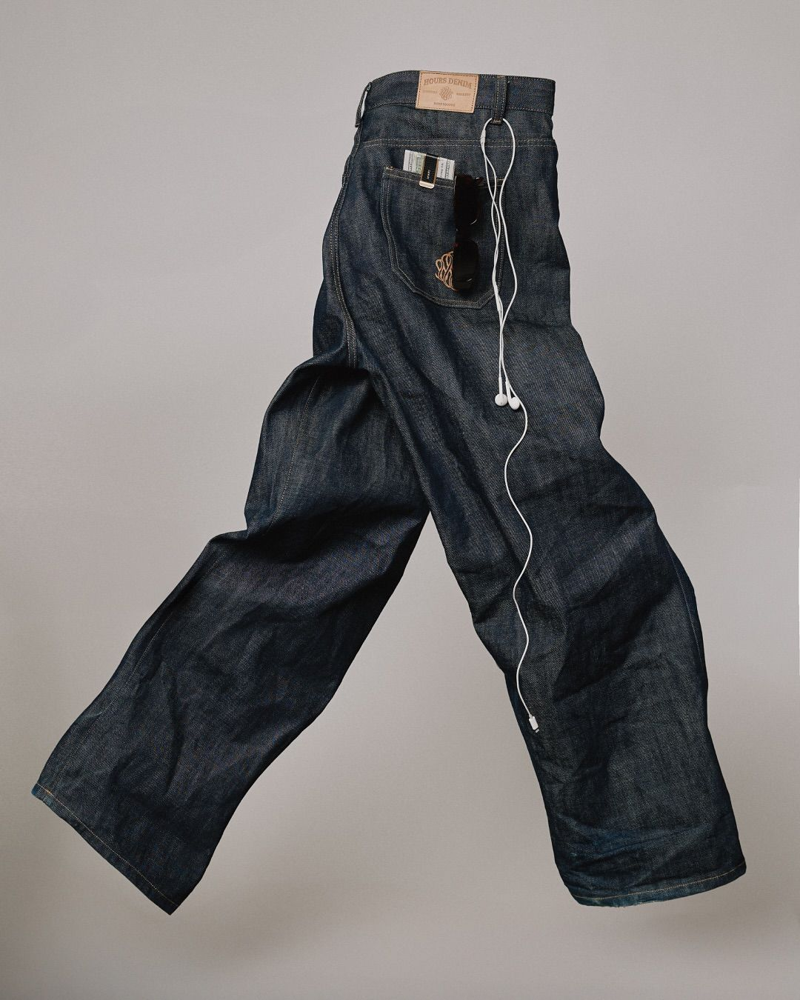
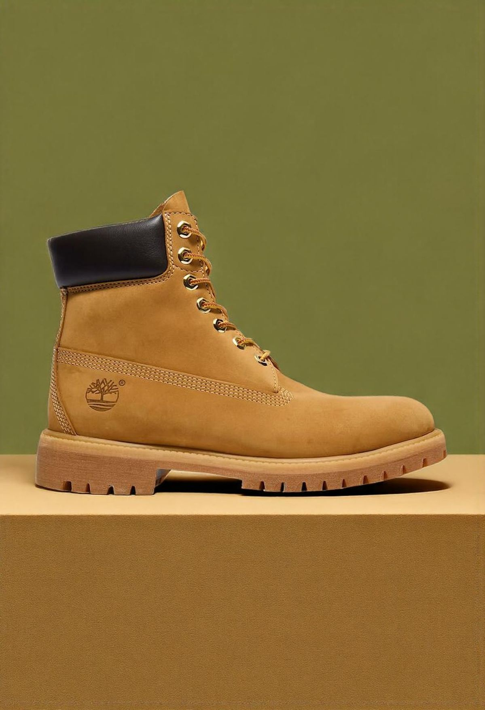
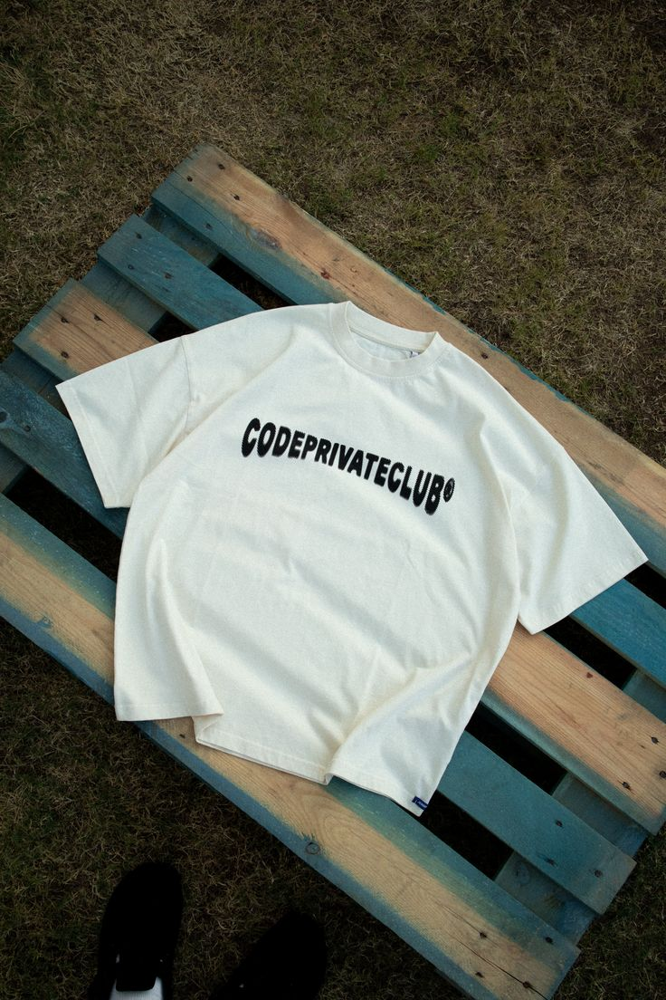
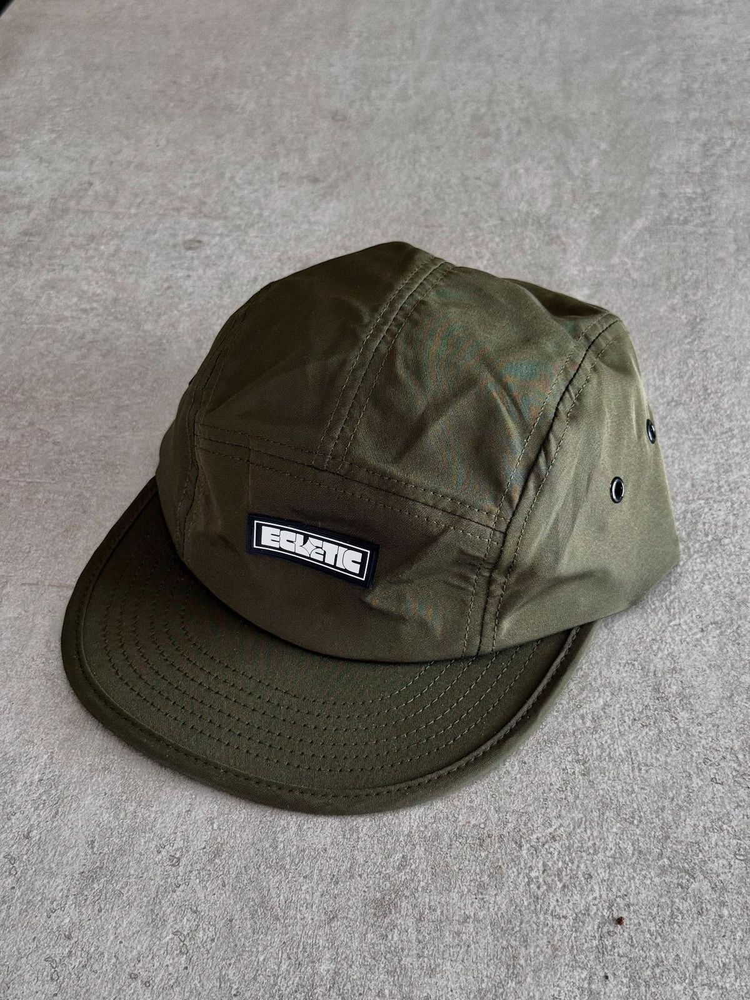

Galeria de Estilo





Novidades da Moda
Aqui você encontra as últimas atualizações do mundo da moda, tendências globais e lançamentos das principais marcas.
- Streetwear continua dominando as passarelas em 2026
- Marcas apostam em sustentabilidade e tecidos reciclados
- Estilo minimalista volta com força no cenário global
- Collabs entre marcas de luxo e esportivas crescem cada vez mais
Notícias Recentes
- Nova coleção da Nike aposta em tecnologia e conforto urbano
- Zara lança linha sustentável com foco em baixo impacto ambiental
- Gucci apresenta coleção inspirada nos anos 90
- Semana de Moda de Paris destaca cores neutras e cortes amplos
- Influenciadores ditam novas tendências de estilo nas redes sociais
Nosso Objetivo
O Style News tem como objetivo informar e inspirar pessoas através das tendências de moda, trazendo conteúdos atuais, acessíveis e de qualidade.